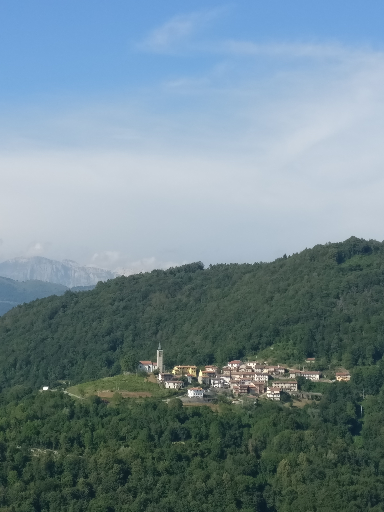
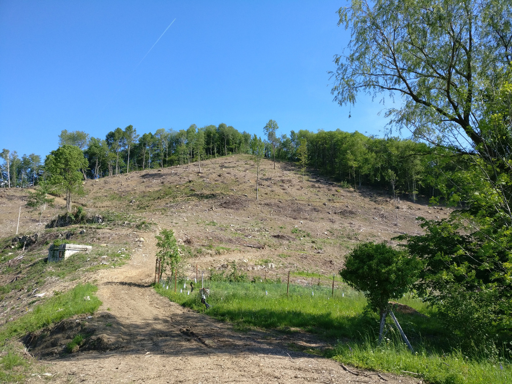

il recupero dei terreni incolti e l'associazione fondiaria di Stregna
dott. Luca Postregna
sindaco@com-stregna.regione.fvg.it
tiny.cc/asfoerbezzo
Tramonti di Sopra (PN) - sala SOMSI
3 agosto 2017 ore 18:00
Di cosa parleremo questo pomeriggio?
- la gestione del recupero dei terreni incolti ed abbandonati del Comune di Stregna
- l'associazione fondiaria: cos'è? cosa fa? cosa farà?
La legge per il recupero dei terreni incolti ed abbandonati
- Interventi di promozione per la cura e conservazione finalizzata al risanamento e al recupero dei terreni incolti e/o abbandonati nei territori montani. LR n.10 del 16 giungo 2010
- Regolamento di attuazione, DPR 27 ottobre 2011 n. 259
finalità della LR 10/2010

- prevenzione incendi
- prevenzione animali nocivi (zecche, ecc.)
- stimolare imprenditoria agricola
- recupero del paesaggio e della biodiversità
tempi di attuazione della LR 10/2010

- 1-2 anni: intervento di recupero, contributo di superificie fino a 6000€/ha
- per almeno 5 anni: mantenimento a prato/pascolo
la concessione in affido

- volontaria (adesione dell'avente titolo)
- amministrativa (imposizione del comune)
gli indirizzi della giunta di Stregna
- n. 11/2015
- n. 77/2015
- n. 109/2015
- n. 14/2016
- n. 65/2016
n. 61/2017
Art. 1 - Individuazione delle aree e domanda di finanziamento
- soggetto operatore, tecnico forestale, soggetto che fa il mantenimento
- caratteristiche delle aree: stato di abbandono, pendenza, superifice, titolo di proprietà, ...
- cronoprogramma intervento e mantenimento
Art. 2 - Indicazioni operative
- rimozione delle ceppaie per pendenza minore del 20%
- altezza max 50cm delle ceppaie su altre superifici
- soggetti arborei adulti max 20/ettaro
- salvaguardia piante monumentali e da frutto
Art. 3 - Accettazione del contributo
Art. 4 - Entità e modalità di rilascio del contributo
- a fine lavori autocertificazione del soggetto operatore e del tecnico forestale
- verifiche a campione da parte del comune
- pagamenti per stati di avanzamento di almeno 1 ha
Art. 5 - Mantenimento della superficie a prato-pascolo
- soggetto operatore
- soggetto che autonomamente si assumente l'onere del mantenimento a prato/pascolo
Si stablisce la quota spettante a ciascuna delle parti
Art. 6 - Impegni del soggetto operatore
- ripristino della viabilità e di eventuali danni
- salvaguardia dei prati stabili
Art. 7 - Accordi tra il comune ed i soggetti che si assumono l’onere dell’intervento delle superfici incolte e del mantenimento a prato pascolo
Art. 8 – Effetti di modifiche ai regolamenti
Al 3 agosto 2017:
- richiesti contributi alla regione FVG per 40ha e 174000€
- emessi 7 decreti di contributo per 17ha
- interventi conclusi su 6ha
- si prevede ulteriori 5ha di interventi conclusi entro ottobre 2017
- ... rinuncie ... ritardi ... modifiche ...
Siamo alla ricerca di soggetti operatori per terminare entro l'inverno 2017-2018 interventi per ulteriori 12ha
Intervento in fraz. Oblizza:
Intervento in fraz. Oblizza:
Intervento in fraz. Dughe:

Intervento in fraz. Clinaz:
Intervento in fraz. Clinaz:
Intervento in fraz. Clinaz:

Funziona tutto a meraviglia?
NO, ci sono la frammentazione fondiaria e la multi-proprietà
Dov'è Stregna?
Il comune di Stregna:
- 370 abitanti
- 20 km^2 di territorio
- tra i 180-900m s.l.m. (fascia C)

Esempio di frammentazione fondiaria della frazione di Cernetig
Le leggi regionali sul frazionamento fondiario e la multi-proprietà
lr 16/2006
razionalizzazione fondiaria
PIPA
lr 9/2007
associazioni fondiarie
Dov'è nata l'associazione fondiaria?
Francia 1976
association fonciere pastoraux (legge pastorale francese)
Italia 2012
Carnino (CN)
altre ...
Cos'è l'associazione fondiaria?
- associazione di volontariato senza fini di lucro
- acquisisce la gestione dei fondi agricoli dai soci
- non usucapisce la proprietà per statuto
- cede l'utilizzo dei fondi agli operatori agricoli con finalità di recupero dei terreni incolti ed abbandonati in particolare per finalità pascolive
Com'è arrivata l'associazione fondiaria a Stregna?
2012-2013
- movimento freeplanine - Poldini, Iussig, ...
- lr 10/2010 per il recupero dei terreni incolti ed abbandonati
2015
- marzo: conferenza introduttiva (Cavallero, Iussig, ...)
- maggio: atto costitutivo ed approvazione statuto (Coldiretti, Kmečka Zveza, ...)
- estate: problemi lr 10/2010 + moduli di adesione
- dall'autunno: ammissione nuovi soci...

soci fondatori, 19 maggio 2015
2016
- avvio dei primi interventi di recupero dei terreni incolti
- modifiche ai regolamenti comunali...
A che punto siamo con l'ASFO Erbezzo di Stregna nel 2017?
- 75+ soci
- 320+ particelle
- 45+ ha
ASFO Erbezzo a Stregna

ASFO Erbezzo ad Oblizza

ASFO Erbezzo a Tribil Superiore


Cosa ci facciamo con i terreni in gestione?
- autorizziamo gli interventi di recupero dei terreni incolti ed abbandonati
- stipuliamo contratti d'affitto per il mantenimento delle superifici a prato/pascolo

Quali sono i problemi riscontrati?
Difficoltà burocratiche
- errori lr 10/2010
- stesura statuto e moduli adesione
- stesura contratto d'affitto
Difficoltà tecniche
- analisi dati catastali
Contattare i titolari dei fondi
Quali sono le prospettive?
+ fondi
incrementare le superfici in prossimità delle frazioni per il recupero dei terreni incolti
piano di gestione
controllare l'attività di sfalcio e pascoliva (c'è la lr 9/2007...)
nuovi tipi di aree?
boschive e prative
finanziamenti PSR
accedere alle misure del Piano di Sviluppo Rurale (indennità compensative, muretti a secco, viabilità forestale, ...)
aggiornamenti legislativi e nuove norme
prevedere contributi per investimenti sulle leggi regionali per le ASFO
promuovere una norma nazionale
Un consiglio per iniziare?

Grazie per l'attenzione
dott. Luca Postregna
sindaco@com-stregna.regione.fvg.it
tiny.cc/asfoerbezzo
Tramonti di Sopra (PN) - sala SOMSI
3 agosto 2017 ore 18:00